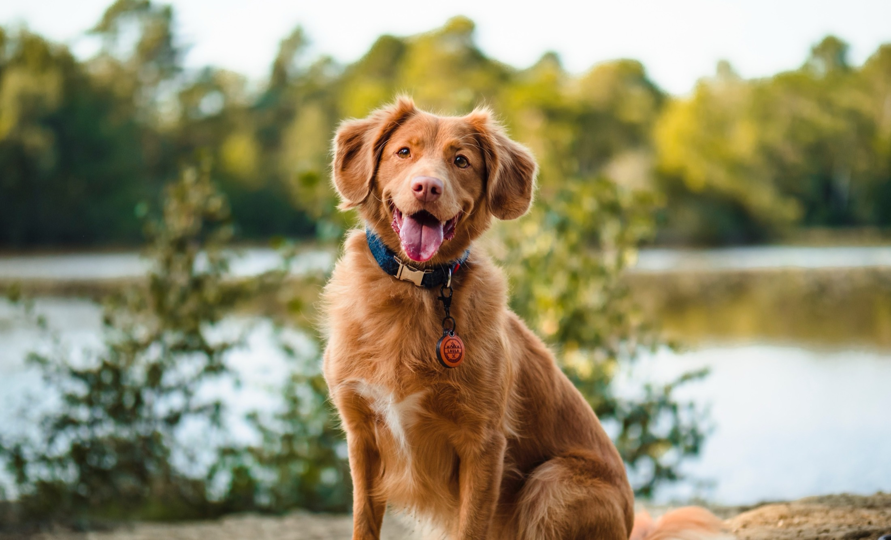

Rescuing Dallas dogs since 2001.
We rescue, rehab, and rehome deserted dogs into their forever families.

Come play with us.
These dogs are looking for their forever families right now.

Our story
It began with a howl at 3 a.m.
A droopy-eared basset hound led newlyweds Lilia and Clay Hollis down Flagpole Hill to a Shih Tzu puppy on the edge of death. They adopted both dogs. What followed was White Rock Dog Rescue.
- 327Dallas dogs rescued
- 2001Rescuing since
- 100%Volunteer-based 501(c)(3)